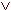
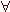

The method of Tree Proofs, also known as Semantic Tableaux, is an effective algorithm for checking the validity of formulas in various logics. This website generates tableaux for classical propositional and predicate logic.
Internally, the script searches for a so-called free-variable tableau, which is then translated back into a familiar (sentence) tableau. The search uses backtracking with iterated deepening of the search space. At the same time, a simple countermodel detector tries to find a countermodel for the formula.
The proofs are calculated and drawn using JavaScript (also known as ECMAScript and JScript). So to enjoy them you have to enable JavaScript, and use a browser with sufficient JavaScript support. Recent versions of Firefox, Opera, Safari, Konqueror or Netscape will do. Internet Explorer also (just about) works on Windows, but not on the Mac. If you're running MacOS Classic, you might try WaMCom.
The standards for well-formed formulas used here are very relaxed: Any single character except '\', '%', '(', ')' and ',' is allowed as a propositional constant, variable, predicate, or individual constant. The character may be followed by digits as indices. Predicates and function terms must be in prefix notation, the latter must have their arguments enclosed in brackets. So F2x17, Rab, R(a,b), Raf(b), F(+(1,2)) are ok, but not Animal(Fred), aRb, or F(1+2). (In fact, these are also ok, but they won't be parsed as you might expect.)
The order of precedence among connectives is , , , , . Association is to the right. So ABCD is read as A((BC)D). Multiple quantifiers must not be omitted: Write xyz instead of xyz.
Comments, bug reports and suggestions are always welcome: